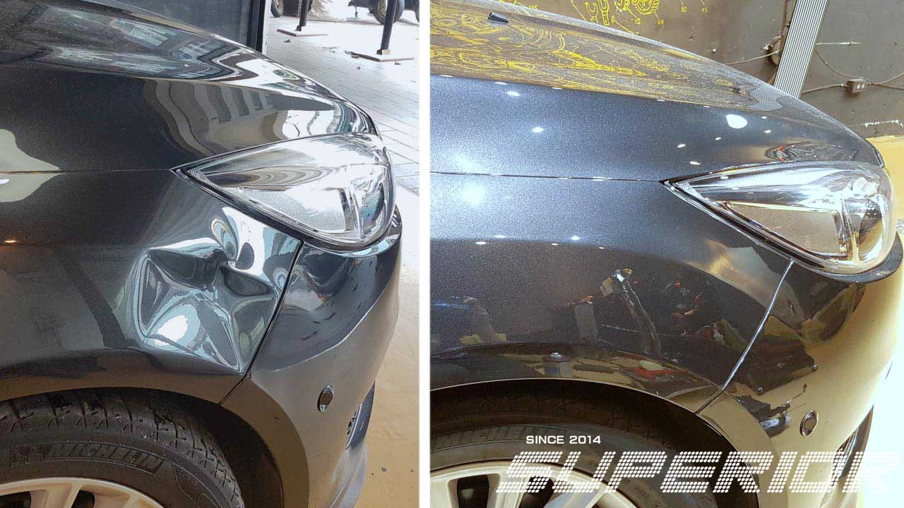
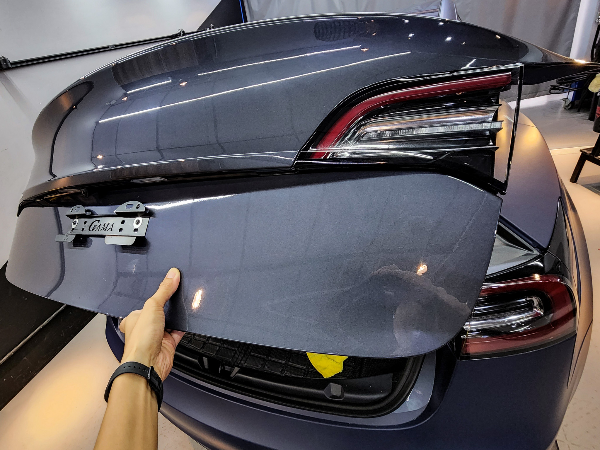
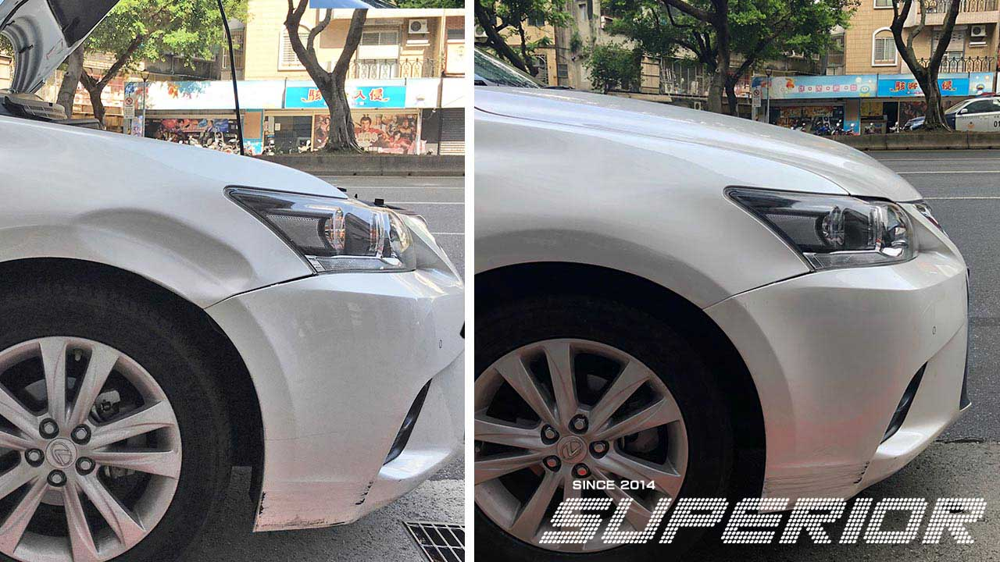
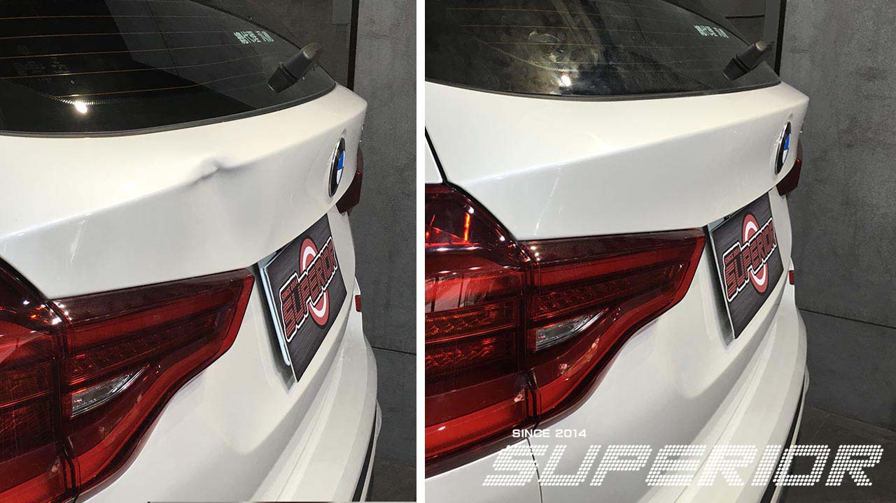
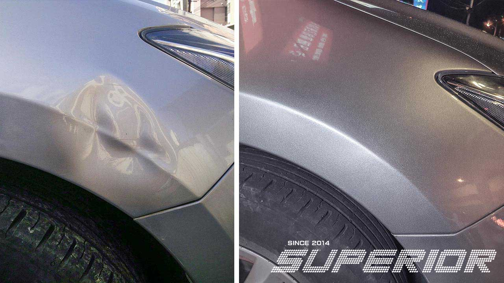
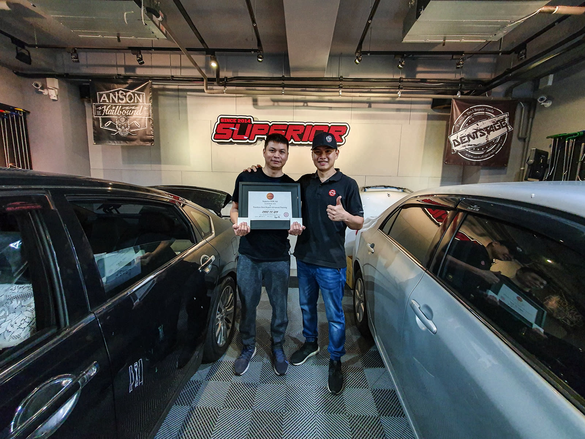

PDR（Paintless Dent Repair，免烤漆凹痕修復），台灣俗稱「微板金」或「免烤漆板金」，是一種從車身板件內側以特殊推桿將凹痕推平的修復技術，完全不接觸原廠塗裝，不需重新烤漆。
相較於傳統板金烤漆，PDR 凹痕修復的優勢：保留原廠塗裝；不影響原廠保固；修復時間僅需數小時；費用低 30–60%；維持車輛原廠保值性。
卓越 PDR 自 2014 年創立至今，持續赴美國、日本、義大利等地深造，將最頂尖的國際 PDR 技術帶回台灣，是台灣在國際 PDR 技術版圖上最具代表性的品牌。
從一般鋼板凹痕到電動車鋁合金板件，從單一凹痕到冰雹大面積損傷，卓越提供最完整的 PDR 免烤漆修復服務。

免烤漆微板金技術，各種凹痕、停車場碰撞、冰雹損傷，不重新烤漆完整保留原廠塗裝。

IMI 二級電動車認證，Tesla Model 3/Y/S/X 鋁合金板件凹痕修復，不影響原廠保固。

Porsche、BMW、Audi、Mercedes 鋁合金板件專業修復，特殊工具與技法，不烤漆保值。

冰雹損傷、大型凹陷、連珠凹痕修復，系統化作業規劃，完整保留原廠塗裝。

Harley-Davidson、BMW 等重型機車油箱 PDR 修復，保留原廠烤漆與貼紙，不影響外觀。

2週/4週密集訓練課程，最多一對二小班制，VALE 認證技師親授，100+ 亞洲結業學員。
卓越 PDR 不只是一間修車廠，而是台灣在國際 PDR 技術版圖上最具代表性的品牌——每一項技術突破，都源自不斷向世界頂尖技師學習的熱忱。
2014年創立，逾12年持續深耕 PDR 技術，Instagram 和 YouTube 均有大量真實修復記錄。
持有英國 IMI 二級電動車維修認證，是台灣極少數符合國際安全標準的電動車 PDR 技師。
台北、新北、桃園、新竹、台中、高雄，全台覆蓋，相同品牌標準，相同修復品質。
來自台灣、香港、新加坡、越南、馬來西亞等地的 PDR 技師，選擇卓越訓練中心深造。
2018、2023、2026 年主辦 Asia Advanced Training Workshop，邀請美日歐頂尖講師親臨台灣。
多位技師持有 VALE Master Craftman 認證，卓越要求每位技師都達到國際認可水準。
卓越的技師不只修車，更代表台灣走上國際 PDR 舞台，以得獎、認證與研討會講師的身份，證明台灣 PDR 技術已達世界級水準。
以下整理了車主最常問的 PDR 凹痕修復問題。如果沒有找到您的答案，歡迎透過 LINE 直接向技師詢問。
PDR（Paintless Dent Repair，免烤漆凹痕修復），台灣俗稱「微板金」或「免烤漆板金」，是從車身板件內側以特殊推桿將凹痕推平的技術，完全不需要磨漆、補土或重新烤漆。 傳統板金烤漆 vs PDR 凹痕修復： • 原廠塗裝：傳統需磨漆重噴／PDR完整保留 • 影響保固：傳統可能影響／PDR不影響原廠保固 • 修復時間：傳統數天／PDR數小時 • 費用：傳統較高／PDR低30–60% • 車輛保值：傳統降低二手估價／PDR維持原廠價值
是的，這些名稱指的都是同一種技術。PDR（Paintless Dent Repair）是英文正式名稱；「微板金」是台灣最常用的俗稱；「免烤漆板金」強調不需重新烤漆。不管用哪個名稱，都指從車身內側以推桿推平凹痕、完全不破壞原廠塗裝的修復技術。
費用依凹痕大小、位置、深度和板件材質而定。參考範圍： • 小型凹痕（直徑5cm以下，平面位置）約新台幣 1,500–5,000 元 • 中型凹痕（直徑5–10cm，或邊緣位置）約 5,000–12,000 元 • 大型或複雜凹痕（折線、深凹）需現場評估 • 鋁合金板件（電動車、豪華車）比鋼板高約30–50% 建議透過 LINE @pdr.tw 傳送清晰照片取得免費估價。
由專業技師操作的 PDR 修復，品質可達幾乎完全看不出來。卓越的技師使用高解析度燈板（線板）從多個角度反覆確認，直到板金完全平整才交車。 對於簡單的圓形淺凹，修復後肉眼基本無法辨認。對於複雜深凹、折線或鋁合金，可能有 95–99% 的修復程度，技師會如實告知，卓越不會過度承諾修復效果。
選擇台灣 PDR 技師的重要指標： 1. 認證資歷：是否有 VALE、IMI 等國際認可認證 2. 真實作品：是否有大量修復前後照片或影片可查 3. 透明報價：是否在施工前提供書面估價 4. 誠實評估：好的技師不會過度承諾修復限制 5. 設備品質：是否使用專業高解析燈板 6. 客戶評價：Google Maps、Facebook 的真實評價 卓越 PDR 擁有 12 年資歷、VALE 認證、IMI 電動車認證，是業界最具國際視野的 PDR 品牌之一。
可以，但電動車 PDR 修復難度較高，必須選擇具備電動車認證的技師。Tesla 大量使用鋁合金車身，修復難度遠高於鋼板。 Tesla 高壓電池電壓達 350–450V，拆卸板件前需遵循 IMI 安全程序。卓越持有 IMI 二級電動車認證，是台灣極少數安全、合規的 Tesla PDR 技師，已成功修復數百輛 Tesla，不影響原廠保固。
採預約制，建議事先預約。最簡單的方式是加 LINE @pdr.tw 傳送凹痕照片，技師通常 24 小時內回覆免費評估和報價。全台 8 間門市各有直撥電話，也可直接電話預約。
可以，冰雹損傷（Hail Damage）是 PDR 最常見的應用之一。大面積冰雹凹痕修復費用依損傷面積、凹痕數量和車型而定，需現場評估後報價。 優勢：完整保留原廠塗裝；維持車輛保值性；費用遠低於傳統全車重噴；修復時間 1–3 天（傳統需 1–2 週）。建議冰雹事故後盡快拍照，透過 LINE 傳給技師評估。
可以。卓越 PDR 訓練中心提供系統化的 PDR 技術訓練： • 中階技術訓練（2週/12天）：從零基礎建立 PDR 核心技術 • 完整技術訓練（4週/24天）：含鋁合金、大面積、開業知識 • PDR 進階技術訓練：針對已有 PDR 經驗的同業技師 • 國際進階訓練研討會（AAW）：與國際頂尖講師同台交流 最多一對二小班制，已有來自台灣、香港、新加坡、越南等 10+ 國家的學員結業。
相同品牌標準、相同技師資歷、相同修復品質。卓越 PDR 在台灣北中南設有 8 間直營門市，無論您在哪裡，都有卓越認證技師為您服務。